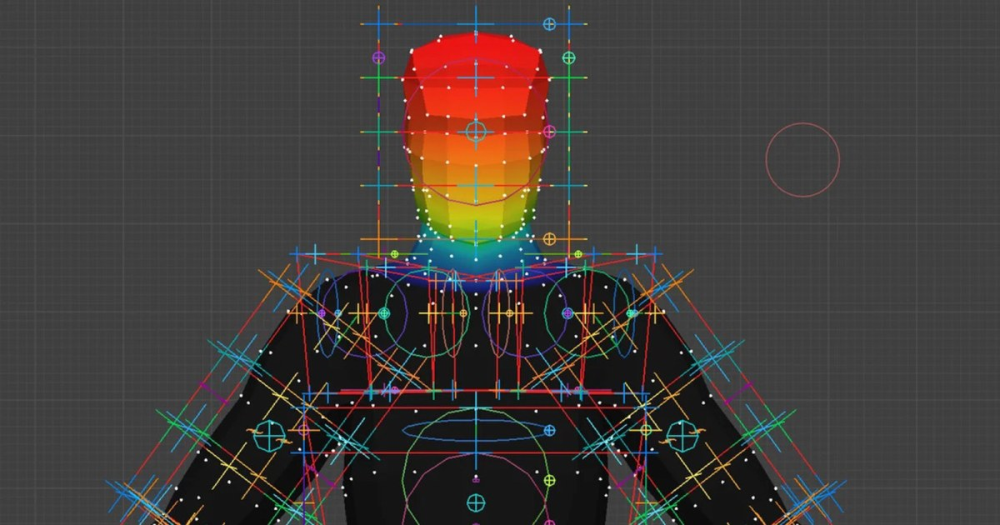

#01 · substance
Substance 3D Painter 12.2：直接在模型上修補烘焙 Cage 與多邊形選取
Adobe 發布 Substance 3D Painter 12.2，新增以筆刷、橡皮擦和多邊形填色直接調整烘焙 Cage 的流程，並擴充 Polygon Fill 選取、混合模式及透明材質顯示。
 SOURCE PREVIEW
· Local visual evidence · 點圖開啟原始來源
SOURCE PREVIEW
· Local visual evidence · 點圖開啟原始來源
Substance ★★★★☆
完整分析
技術流程
當高模局部超出自動產生的烘焙 Cage 時，使用者不必只調整全域距離，而能在網格上用筆刷、橡皮擦或多邊形填色，局部把 Cage 修到貼合模型。
製作影響
Polygon Fill 新增完整四邊面 Loop 一鍵填滿與拖曳矩形區塊的局部 Loop 選取，並支援 Layer Stack 的全部混合模式；預設排除背面多邊形可避免誤填模型後側。
限制與待驗證
材質集清單可在游標停留時於三維視窗標示對應幾何，Viewport 也以順序無關透明度減少透明表面重疊閃爍；來源僅列支援系統，未提供效能成本。
BRIEF｜來源已驗證；證據深度較有限，完整分析會明確區分已知資訊與待驗證事項。
來源 ↗
#03 · blender
Motion Path Pro 3.2：即時更新骨架與相機路徑並改善複雜場景延遲
Blender 外掛 Motion Path Pro 3.2 可即時更新骨骼、物件、相機與 Empty 的 Motion Path，並改善複雜場景及高負載角色的延遲，也能把路徑與 Onion Skin 結合使用。
 SOURCE PREVIEW
· Local visual evidence · 點圖開啟原始來源
SOURCE PREVIEW
· Local visual evidence · 點圖開啟原始來源
Blender ★★★★☆
完整分析
即時路徑技術流程
3.2 版把即時 Motion Path 擴展到骨骼、物件、相機與 Empty，讓動畫調整後可直接看到路徑變化，並能與 Onion Skin 疊加檢查姿勢連續性。
動畫修整製作影響
來源表示新版移除複雜場景與高負載角色的延遲，目標是縮短動畫拋光時反覆更新路徑的等待；外掛可由 Blender 內或 Extensions 平台安裝。
效能限制與待驗證
正文沒有列出測試場景、角色骨數或更新時間，因此「移除延遲」仍缺少可重現的效能數據；大型製作導入前需以實際 Rig 與鏡頭驗證。
BRIEF｜來源已驗證；證據深度較有限，完整分析會明確區分已知資訊與待驗證事項。
來源 ↗
#06 · other-dcc
CG 軟體週報：Marionette 動作編修、ArcBrush PBR 與 EdenLive 即時生成
10 月 25 日軟體週報彙整多項小型更新：Blender 的 Marionette 直接拖曳角色與編修 Motion Trail；ArcBrush 1.7 封裝並預覽 PBR 貼圖集；EdenLive 則在 RTX 5090 上展示即時 720p 生成。
 SOURCE PREVIEW
· Local visual evidence · 點圖開啟原始來源
SOURCE PREVIEW
· Local visual evidence · 點圖開啟原始來源
其他 DCC ★★★★☆
完整分析
技術流程
Marionette 讓 Blender 使用者直接拖曳手、腳或髖部擺姿勢，並以 Motion Trail 控制點或筆刷修改動作；工具另含平滑、洋蔥皮、手腳鎖定及滑步或關節跳動偵測。
製作影響
ArcBrush 1.7 的貼圖節點把色彩、法線、粗糙度、金屬度等通道封裝成一組貼圖集，能在三維模型預覽並輸出給 Blender、Unreal、Unity、Godot 或 Painter。
限制與待驗證
EdenLive 需場景或參考影片、目標首幀與文字提示；5B 權重在單張 RTX 5090 上據稱可超過 24fps 生成 720p，但即時模式只到 480p 或 720p，報導明列為實驗性工具。
BRIEF｜來源已驗證；證據深度較有限，完整分析會明確區分已知資訊與待驗證事項。
來源 ↗
#07 · substance
Material Maker 1.8：Trim Sheet 節點與材質變更自動重新輸出
開源節點材質工具 Material Maker 1.8 新增 Trim Sheet 節點與 Auto Export；約 200 個節點可即時在三維模型預覽，並把 PBR 貼圖輸出至 Godot、Unity 或 Unreal。
 SOURCE CARD
· Generated source card · 點圖開啟原始來源
SOURCE CARD
· Generated source card · 點圖開啟原始來源
Substance ★★★★☆
完整分析
節點材質技術流程
使用者由約 200 個節點組合程序貼圖，結果即時顯示於三維模型；1.8 的 Trim Sheet 節點輸出遊戲用 Trim Sheet，Auto Export 則在輸入變更時重新輸出。
引擎交接製作影響
完成材質可輸出 PBR Map，內建 Godot、Unity 與 Unreal 範本；同一軟體亦可直接在模型表面繪製，讓節點材質與三維貼圖共用開源工具鏈。
版本範圍與導入驗證
1.8 另加 Crop、高品質 Gaussian Blur、子節點搜尋與新介面主題；來源未比較大型 Graph 效能或輸出一致性，正式導入前需用現有材質驗證。
BRIEF｜來源已驗證；證據深度較有限，完整分析會明確區分已知資訊與待驗證事項。
來源 ↗
#09 · substance
歷史參考｜2020 年 Material Maker 0.8 以 SDF 建立程序式 PBR 貼圖
2020 年資料記錄 Material Maker 0.8：在 Godot 節點式材質流程加入二維與三維 SDF，可變形、旋轉、布林及散佈幾何，再由距離場產生 Height 與 Normal Map。
 SOURCE PREVIEW
· Local visual evidence · 點圖開啟原始來源
SOURCE PREVIEW
· Local visual evidence · 點圖開啟原始來源
Substance ★★★☆☆
完整分析
程序材質技術流程
0.6 版以可編輯 GLSL 自訂節點參數與輸入輸出，也能把一段 Graph 收納成高階節點；0.8 再加入二維、三維 SDF 與材質混合工作流。
SDF 貼圖製作影響
SDF 能建立球體、方盒、膠囊與圓環，執行變形、擠出、旋轉及布林，亦可散佈碎石或磚塊，最後生成 Height 與 Normal Map。
舊版工具限制
當時工具約 20 個節點，遠少於 Substance Designer，GLSL 也沒有內建診斷；這是 2020 年 0.8 資料，只能作版本史參考，不能代表現行功能。
BRIEF｜來源已驗證；證據深度較有限，完整分析會明確區分已知資訊與待驗證事項。
來源 ↗
#12 · substance
Substance 3D Painter 12.1：連續重烘焙、Skew 修正與硬表面自動 UV
Substance 3D Painter 12.1 重整貼圖烘焙，加入參數變更後自動更新的連續重烘焙、可在低模上繪製的 Skew 修正，以及面向機械模型的硬表面自動 UV 模式。
 SOURCE PREVIEW
· Local visual evidence · 點圖開啟原始來源
SOURCE PREVIEW
· Local visual evidence · 點圖開啟原始來源
Substance ★★★☆☆
完整分析
技術流程
連續重烘焙會在參數改變後更新 Normal、Curvature 等 Map；Skew 修正則在低模表面繪製烘焙法線方向，並可用筆刷 Flow、Opacity 與 Edge Protection 控制結果。
製作影響
新的硬表面自動展 UV 模式針對機械模型降低變形並產生正交對齊 Layout，來源列舉機械、車輛、遊戲動畫資產與產品視覺化為適用場景。
限制與待驗證
新專案未套 Template 時會預設 OpenPBR Shader，輸出貼圖也採 OpenPBR 命名；烘焙與繪製共用 Undo History，但來源沒有比較舊版效能或實際節省工時。
BRIEF｜來源已驗證；證據深度較有限，完整分析會明確區分已知資訊與待驗證事項。
來源 ↗
#13 · blender
歷史參考｜Zen UV 5.0：直接操作 UV 島並橋接自動展 UV 工具
2025 年 Zen UV 5.0 為 Blender 加入 Zen UV Touch Gizmo、Auto Unwrap 與保留邊面選取狀態的 Zen Sync，並延伸交疊、拉伸面選取和 Trim Sheet 控制。
 SOURCE PREVIEW
· Local visual evidence · 點圖開啟原始來源
SOURCE PREVIEW
· Local visual evidence · 點圖開啟原始來源
Blender ★★★☆☆
完整分析
技術流程
Zen UV Touch 讓使用者在 UV Editor 以 Gizmo 直接移動、縮放、旋轉或吸附 UV 島；既有工具也涵蓋堆疊、鏡像、隨機化、縫合與重塑。
製作影響
Auto Unwrap 將 Blender 工作流橋接到 Windows 專用的免費 Ministry of Flat；Zen Sync 會在工作模式切換時保留邊與面的選取，另增交疊或拉伸面選項。
限制與待驗證
工具另含 UDIM、Trim Sheet 與 Texel Density 管理；5.0 當時支援 Blender 4.0 以上。本文是 2025 年版本資料，不能推定目前相容性與價格。
BRIEF｜來源已驗證；證據深度較有限，完整分析會明確區分已知資訊與待驗證事項。
來源 ↗
#14 · maya
歷史參考｜2010 年 Autodesk Advantage Pack 的 GPU 算圖與模擬更新
2010 年 Autodesk 訂閱更新曾為 3ds Max 加入 iray 與 GPU PhysX、為 Maya 提供四套 Craft 相機 Rig，Softimage 則加入 Lagoa、Composite 和 MatchMover；內容僅供版本史參考。
 SOURCE CARD
· Generated source card · 點圖開啟原始來源
SOURCE CARD
· Generated source card · 點圖開啟原始來源
Maya ★★★☆☆
完整分析
技術流程
3ds Max 的套件整合 iray GPU 物理算圖、PhysX 剛體與最多 75 組 Substance 動態材質；Maya 則加入四套以輸入裝置驅動的 Craft Director Studio 相機 Rig。
製作影響
Softimage 取得 Lagoa 多物理系統、ICE 著色器與資產、合成、攝影機追蹤和立體視窗；MotionBuilder 增加同步錄製參考影片、即時曲線過濾與運動路徑上方向控制。
限制與待驗證
這批功能是 2010 年訂閱戶專用的半版更新，Mudbox Linux 版與當時的繪製、拓樸功能也屬舊產品線；不能用來描述現行 Autodesk 軟體功能或授權。
BRIEF｜來源已驗證；證據深度較有限，完整分析會明確區分已知資訊與待驗證事項。
來源 ↗
#16 · blender
歷史參考｜2026 年 Weight Paint Box 以變形盒控制多頂點群組權重
2026 年資料介紹 Blender 外掛 Weight Paint Box：以可調整變形盒限定權重範圍，每個盒面有獨立平滑區，可同時處理與鏡像多個 Vertex Group，並把盒外幾何隱藏。

SOURCE PREVIEW
· Local visual evidence · 點圖開啟原始來源
Blender ★★☆☆☆
完整分析
權重繪製技術流程
使用者把目標區域放進可調整變形盒，各盒面以獨立圓形控制平滑，並可設定盒內或盒外的強度與方向，避免不同盒面的效果互相重疊。
Rig 製作影響
工具可同時處理與鏡像多個 Vertex Group、隱藏盒外幾何並一起查看所有群組；同套件的 Draw Bone 另提供 Rigify、人形與 MetaHuman 骨架及 Smart Chain。
版本限制與待驗證
這是 2026 年 4 月的功能介紹，正文未列 Blender 相容版本、複雜角色效能或權重品質比較；目前版本與大型 Rig 的穩定性仍需實測。
BRIEF｜來源已驗證；證據深度較有限，完整分析會明確區分已知資訊與待驗證事項。
來源 ↗
#17 · blender
歷史參考｜2025 年 Blender 與 DaVinci Resolve 實拍合成入門書
2025 年出版的《Hello VFX》以 Blender 和 DaVinci Resolve 解說實拍合成，章節涵蓋畫面追蹤、色彩匹配、綠幕去背、動態遮罩、多通道合成與完整製作流程。

SOURCE CARD
· Generated source card · 點圖開啟原始來源
Blender ★★☆☆☆
完整分析
實拍合成技術流程
書籍依序涵蓋追蹤畫面動態、匹配實拍與 CG 色彩、以 Chroma Key 和 Rotoscope 抽取主體，再把 CG Pass 疊回實拍素材。
免費工具製作影響
內容以 Blender 和 DaVinci Resolve 為主要工具，透過街景破壞、異世界與角色置入等作例連結理論和操作，降低學習實拍 VFX 的軟體成本。
教材範圍與版本限制
來源只列部分章節，沒有完整目錄、軟體版本或素材規格；這是 2025 年 6 月出版資訊，操作介面與現行版本相容性需另行確認。
BRIEF｜來源已驗證；證據深度較有限，完整分析會明確區分已知資訊與待驗證事項。
來源 ↗
#18 · blender
歷史參考｜2020 年 Blender Playblast 外掛一鍵輸出視窗動畫預覽
2020 年資料介紹免費 Playblast tool to Blender：從視窗側欄一鍵把 Viewport 狀態輸出為 QuickTime、MP4、AVI、Ogg 或 Matroska，支援線框、Solid、材質預覽與視窗算圖模式。
SOURCE CARD
· Generated source card · 點圖開啟原始來源
Blender ★★☆☆☆
完整分析
動畫預覽技術流程
啟用外掛後，使用者可從 Viewport 左側按鈕直接輸出動畫預覽，並選擇線框、Solid、材質預覽或 Viewport Render 模式。
審片輸出製作影響
輸出格式包含 QuickTime、MP4、AVI、Ogg 與 Matroska，並支援 Blender 2.83 的音訊格式；內建播放器可拖曳正反播及逐格檢查。
舊版相容限制
這是 2020 年、以 Blender 2.83 為基準的外掛資料；來源未提供後續維護狀態，因此在目前 Blender 版本導入前必須先驗證安裝與編碼輸出。
BRIEF｜來源已驗證；證據深度較有限，完整分析會明確區分已知資訊與待驗證事項。
來源 ↗